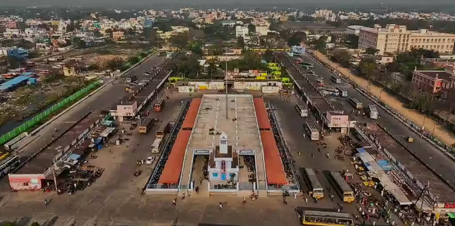

Villupuram
Villupuram Bus Stand

Viluppuram Bus Station, popularly known as Villupuram New Bus Stand, is one of the bus terminus of Viluppuram.
The other being the Viluppuram Old Bus Stand that is primarily used for intra-city buses.
The bus station is located 2 kilometres (1.2 mi) away from the town's major railhead Viluppuram Junction
Tamil Nadu State Transport Corporation services both mofussil and town buses to the station. By area-wise it is one of the largest bus terminus in Tamil Nadu.
The bus station is located 2 kilometres (1.2 mi) from the town's major rail head Viluppuram Junction, one of the largest and important station in the Southern Railway Zone